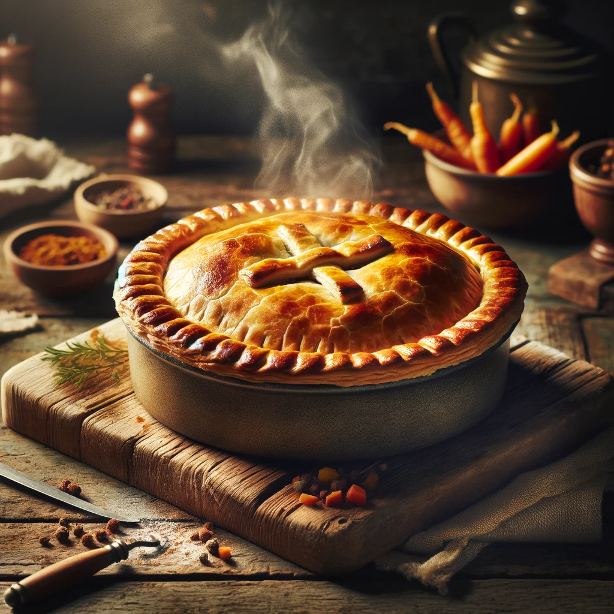

Dragonborn's Delight
A sumptuous pie with spiced beef, sweetfire root, and cheese, encased in flaky pastry.

Image generated by OpenAI's DALL·E
- Prepare flaky pastry dough and chill.
- Cook ground beef with onions, garlic, and Skyrim spices like sweetfire root and frost salts.
- Mix in shredded cheese and cool.
- Roll out the pastry dough and fill with the beef mixture.
- Cover with another pastry layer, sealing edges.
- Brush with beaten egg and bake until golden.
- Serve in wedges with steamed cabbage.